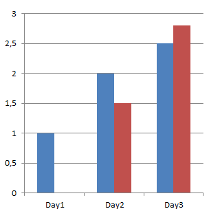

Default Settings for new Datapoints
Detailed History
Create for every Timespan a extra ObjectId in Tree
Every Day (Many Datapoints)
Every week
Every month
Every quarter
Every year
Current / previous Data
-1 = no Data collected (also current), 0 = only current timespan, > 0 the timespans before
Keep previous Minutes
Keep previous Hours
Keep previous Day
Keep previous week
Keep previous month
Keep previous quarters
Keep previous year
Counter Reset Detection
Enable Counter Reset Detection
Ignore Values Lower then the Last Good Value